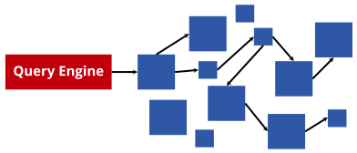

Decentralized Knowledge Graphs (DKGs)
Lack of centralized index(es)
Massive number of sources
Permissioned data
Difficulties for app developers
-
Discovering data
How can I find data?
-
Combining data
How to combine data across different sources?
-
Preserving privacy
How to not leak sensitive data?
How can query engines abstract access to DKGs?
Focus on Solid

Personal data pods
Full control of where your pod is stored and who can access it

Pods can store any kind of data
Personal data, photo's, friends, ...
→ Massive decentralization of data across documents and pods

1. Execution of structured queries
-
Expressive query languages
E.g. SPARQL
-
Declarative queries
They define what needs to happen, without specifying the how
Reusable query engines transform queries into executable code
SELECT ?messageId ?messageCreationDate ?messageContent WHERE {
?message snvoc:hasCreator pods:6597069767117/profile/card#me;
rdf:type snvoc:Post;
snvoc:content ?messageContent;
snvoc:creationDate ?messageCreationDate;
snvoc:id ?messageId.
}
2. Discovery of data within pods
-
Data is spread over multiple files within pods
Files for posts, comments, pictures, ...
3. Discovery of data across pods

-
Data can be interlinked across pods
People can like a post from someone else
4. Handling location heterogeneity
-
Pods can store data in different locations
Categorize photos by location, date, ...
→ Engines should not make assumptions about locations!
5. Handling schema heterogeneity
-
Different pods may use different schemas
Using different RDF vocabularies
6. Handling API heterogeneity
-
In the future, pods may be exposed using other APIs
Current pods use the document-oriented Linked Data Platform API
7. Authentication
-
Not all data is public
Query engines need to request resources on behalf of user
8. User-perceived performance
-
Decentralized applications should have a good user experience
Keeping user attention requires fast query results (~seconds)
At least partial results; full results may be slower
Link Traversal Query Processing for Solid
Taelman, R., Verborgh, R.: Link Traversal Query Processing over Decentralized Environments with Structural Assumptions. In: Proceedings of the 22nd International Semantic Web Conference (2023).
-
SPARQL query engine follows links between documents
Exploits structural properties of Solid

ESPRESSO: keyword search over pods
Ragab, M., Savateev, Y., et al.: ESPRESSO: A Framework for Empowering Search on Decentralized Web. In: International Conference on Web Information Systems Engineering. pp. 360–375. Springer (2023).
-
Indexing of keywords in pods to enable search
POD-QUERY: query agent on pod
Vandenbrande, M., et al.: POD-QUERY: Schema Mapping and Query Rewriting for Solid Pods. In: ISWC2023, the International Semantic Web Conference (2023).
-
Full SPARQL querying within a single pod
No approach meets all requirements
| Requirement |
LTQP Solid |
ESPRESSO |
POD-QUERY |
| Execution of arbitrary structured queries |
✓ |
|
✓ |
| Discovery of data within pods |
✓ |
✓ |
✓ |
| Discovery of data across pods |
✓ |
~ |
|
| Handling location heterogeneity |
✓ |
✓ |
✓ |
| Handling schema heterogeneity |
|
|
|
| Handling API heterogeneity |
|
|
|
| Authentication |
✓ |
✓ |
✓ |
| User-perceived performance |
~ |
✓ |
✓ |
Open challenges for the future
-
Heterogeneity of schemas across pods
Server-side or client-side schema alignment through reasoning
-
Heterogeneity of APIs in pods
Discovery of pod capabilities and usage during query planning
-
Better performance for cross-pod queries
Client-side optimization: link prioritization, query planning
Aggregators exposing summaries across multiple pods
Conclusions
-
Query engines can abstract access to DKGs
Hide away complexities surrounding DKG access
-
Querying DKGs introduces new requirements
Requirements that do no exist for centralized querying
-
Current approaches do not meet all requirements
Open challenges on schema/API heterogeneity and performance
 ↔
↔
 ↔
↔